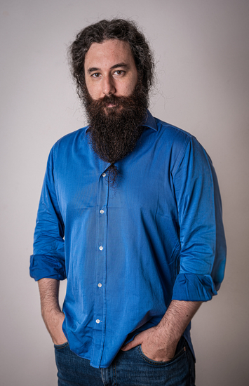

RUOLO ATTUALEGSNET ITALIA
Analyst & Architect
Consulenza interna tecnico-scientifica ai tavoli direzionali, analisi e architetture. Guida tecnica dei progetti e attività nel red team di cybersecurity.
ROMA, ITALIA / SYSTEMS & EDUCATION
Analyst & Architect.
Consulenza tecnico-scientifica.
In GSNET Italia collego analisi, architetture e leadership tecnica. Porto il ragionamento tecnico-scientifico nei progetti e nei tavoli direzionali, con un percorso che unisce software, sistemi, cybersecurity e formazione.

Analyst & Architect in GSNET Italia. Lavoro come consulente interno tecnico-scientifico, affianco i tavoli direzionali e seguo progetti come tech leader.
Metto in relazione esigenze, vincoli e scelte di architettura, contribuendo alle decisioni e alla guida tecnica dei progetti. Faccio parte del red team di cybersecurity di GSNET Italia.
La base resta multidisciplinare: elettronica, studi in Fisica, software, Linux e calcolo scientifico. La porto anche in aula, dove insegno a capire i sistemi oltre che a usarli.
Il percorso professionale, con esperienze e formazione ↗02 / IL PERCORSO
Consulenza interna tecnico-scientifica ai tavoli direzionali, analisi e architetture. Guida tecnica dei progetti e attività nel red team di cybersecurity.
Percorsi con Boolean, Geeks Academy Europe ed Edison School. Nel 2026, Python nel corso executive AI-Empowered Linguist della Civica Altiero Spinelli.
Docenza con Archimede Informatica: programmazione di basso livello, VHDL, Linux e calcolo parallelo con MPI e OpenMP.
Dimostratori embedded con Space42 Europe e divulgazione scientifica nell’installazione di Andrea Galvani al Mattatoio di Roma.
Dal confronto con la direzione alla guida tecnica: analisi, architetture e formazione si sostengono a vicenda.
Filtra le esperienze per ambito ↗LinkedIn ↗IL METODO / DALL’ESIGENZA ALLA PROVA
Cinque passaggi collegati.
Esempi dai miei progetti personali.
03 / PROGETTI SELEZIONATI
Tre progetti per esplorare il mio lavoro su software, dati ed elettronica. Ogni scheda include un esempio eseguito e una scelta tecnica raccontata.
PROGETTO PERSONALE · IN SVILUPPO
Uno strumento locale per progettare, validare e confrontare schemi database. Dal modello alle dipendenze, ai diagrammi e alla documentazione, fino al DDL da revisionare.
Import di modelli CSV ed Excel, import DDL SQLite e generazione per sottoinsiemi dichiarati di SQLite, PostgreSQL e SQL Server. Prove su database reali; nessuna migrazione eseguita automaticamente.
PROGETTO PERSONALE · IN SVILUPPO
Un registro locale delle visite ai ristoranti: importazione multiformato, analisi di spesa e valutazioni, andamento mensile e verifica dei duplicati.
Motore C17 e libreria nativa per CSV, TSV e JSON. Gli altri formati passano dagli adattatori Python; la parità del lettore C è ancora in sviluppo. Pacchetti standalone e prove sui dati di ingresso.
RICERCA PERSONALE · SOFTWARE E SIMULAZIONI
Un laboratorio per collegare software C e moduli FPGA: filtri digitali, controllo dei flussi di dati e un percorso separato di ricerca sull’entropia hardware.
Piattaforma scelta: Opal Kelly XEM8305-AU15P. Filtro FIR C/VHDL verificato in simulazione; integrazione USB 3.0 e misure sulla scheda ancora da sviluppare. Nessuna accelerazione dichiarata prima dei benchmark.
RICERCA PERSONALE · IN SVILUPPO
Un nucleo Python per cercare prove documentali nelle note locali e restituire testo, file e righe di origine. Snapshot transazionali e impronte SHA-256 rendono verificabile il rapporto tra indice e sorgenti.
Sviluppato come componente autonomo a partire dall’esperienza del laboratorio AI sul MacBook. CLI disponibile; adattatori HTTP/MCP e integrazione dell’orchestrazione sono passi successivi.
PROGETTO PERSONALE · APPLICAZIONE LOCALE 2.1
Registro di attrezzature e manutenzioni: anagrafiche, scadenze, costi e storico. Controllo dell’avanzamento degli interventi e consultazione dello storico operativo.
Interfaccia React, API TypeScript, importazione con anteprima e transazione integrale, workflow controllati e backup consistenti. Pensato per un operatore locale.
PROGETTO UNIVERSITARIO · 2024
Sperimentazione con autoencoder e segnali audio: addestramento, analisi delle rappresentazioni e confronto dei risultati.
PROGETTO PERSONALE · VERSIONE 1.0
Un portale per pubblicare note di progettazione, analisi e decisioni tecniche. Bozze private, pubblicazione programmata, ricerca per argomento e feed RSS.
Redazione autenticata tramite Django Admin e contenuti testuali con escaping HTML. Evoluzione del precedente esercizio Django.
04 / DENTRO LE SCELTE
Tre decisioni reali.
Scegli il percorso e guarda cosa cambia.
01 / SQL TOOLKIT
La CLI produce un modello, un diagramma e SQL da revisionare. La decisione è rendere ogni passaggio ispezionabile: lo schema della demo resta lo stesso lungo tutto il percorso.

02 / VISIT LEDGER
La scelta del lettore è esplicita. Un formato supportato viene letto dal backend richiesto; gli altri producono un errore prevedibile. La modalità automatica ha un instradamento distinto.
LETTURA ESPLICITA C
La demo usa un CSV inventato e produce i report con il backend C.
03 / ENTROPY BRIDGE
Definisco arrotondamento, saturazione e stato del filtro. Il testbench VHDL controlla il risultato contro il riferimento C. Il benchmark completo CPU–USB–FPGA sarà un passaggio successivo.
IMPULSO DIMOSTRATIVO
Risultati verificati con GHDL · nessuna misura fisica
05 / COMPETENZE E APPROCCIO
Collegare esigenze, vincoli e scelte di sistema. Rendere le decisioni tecniche leggibili e discutibili.
Requisiti / Architetture / Dati
Guidare il lavoro tecnico dei progetti e portare una prospettiva scientifica al confronto con la direzione.
Tech leadership / Consulenza
Software, Linux, calcolo e integrazione hardware. Attività nel red team di GSNET Italia.
C / Python / Linux / Red team
Trasformare argomenti complessi in percorsi pratici: programmazione, AI, sistemi e divulgazione.
Docenza / AI / Calcolo scientifico
06 / CONTATTI
Scegli il punto di partenza: un sistema da progettare, un argomento da insegnare o un progetto da esplorare insieme.
Analisi, scelte di sistema e confronto tecnico-scientifico.
Scrivimi sul progetto ↗02 / FORMAZIONEProgrammazione, AI, Linux e calcolo scientifico, con esercitazioni concrete.
Parliamo della formazione ↗03 / COLLABORAZIONIRicerca personale, software, elettronica e divulgazione.
Proponimi una collaborazione ↗